여러분, 어릴 때 친구들과 수학여행 갈 때 손에 하나쯤 들고 갔던 일회용 필름카메라 기억나시나요? 물론 너무 젊으신 분들은 잘 모르실 수도 있겠지만, 저 같은 늙크크(?)들은 아마 공감하실 겁니다.
옛날에는 지금처럼 집집마다 카메라가 여러 대씩 있던 시절이 아니었습니다. 필름카메라 한 대가 꽤 귀한 물건이었고, 평소에는 장롱 깊숙한 곳에 보물처럼 모셔두었다가 졸업식이나 가족여행 같은 특별한 날에만 꺼내 쓰곤 했죠.
드라마 《응답하라 1988》을 보면 덕선이가 수학여행에서 아빠 카메라를 잃어버리고 엉엉 우는 장면도 나옵니다. 그만큼 당시 카메라는 쉽게 들고 다니기에는 꽤나 귀한 물건이었습니다. 그래서인지 수학여행이나 소풍을 가는 친구들의 손에는 비교적 부담 없이 사용할 수 있는 일회용 카메라가 한 대씩 들려 있었던 것 같습니다.
일회용 카메라가 주는 감성
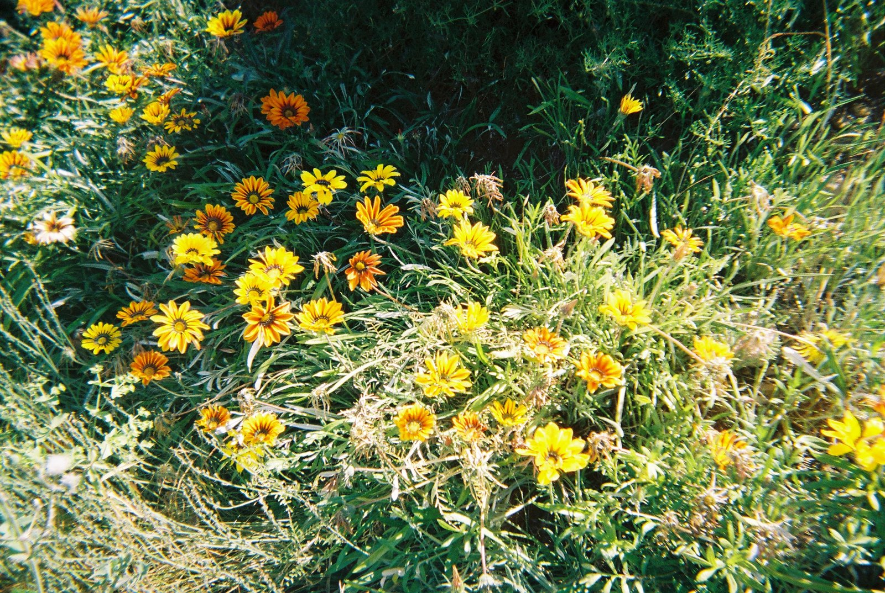
일회용 카메라는 사실 카메라로서 보면 굉장히 단순합니다. 초점도 거의 고정이고, 셔터스피드나 조리개를 직접 조절할 수도 없습니다. 렌즈 역시 요즘 카메라와 비교하면 선명하다고 말하기 어렵죠. 그런데 재미있는 건 바로 그 부족함 때문에 일회용 카메라만의 사진이 만들어진다는 겁니다.
조금 흐릿하기도 하고, 노출이 완벽하지 않을 때도 있고, 플래시를 터뜨리면 인물만 허옇게 나오기도 합니다. 하지만 그런 사진을 보고 있으면 이상하게 그날의 분위기가 더 생생하게 느껴질 때가 있습니다. 이런 완벽하지 않음이 오히려 요즘 디지털카메라에서는 느끼기 힘든 옛날의 향수를 느끼게 해주는 것 같습니다. 그리고 특유의 와인딩 방식도 빼놓을 수 없습니다. 사진 한 장을 찍고 다음 장을 찍기 위해 필름을 감을 때 나는 '드르륵, 드르륵' 소리와 손끝으로 느껴지는 톱니바퀴의 촉감. 이런 사소한 것들도 예전의 향수를 깨워주는 것 같습니다.
일회용 카메라는 어떻게 사용할까?
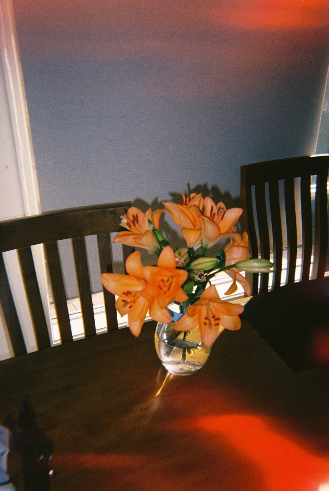
일회용 카메라의 사용법은 굉장히 간단합니다. 먼저 필름 와인딩 휠을 끝까지 돌려줍니다. 그리고 뷰파인더를 보고 구도를 잡은 다음 셔터를 누르면 끝입니다. 사진 한 장을 찍었다면 다시 와인딩 휠을 돌리고 다음 사진을 찍으면 됩니다. 제품에 따라 조금씩 다르지만 보통 27장 전후의 사진을 찍을 수 있습니다.
다만 여기서 주의해야 할 점이 하나 있습니다. 일회용 필름카메라는 대부분 꽤 광각의 렌즈를 가지고 있기 때문에 사진에 손가락이 나오는 실수를 할 확률이 높습니다. 특히 카메라를 잡을 때 자신도 모르게 렌즈 옆쪽으로 손가락이 들어가는 경우가 있기 때문에 렌즈를 가리지 않도록 신경 쓰면서 촬영하는 것이 좋습니다.
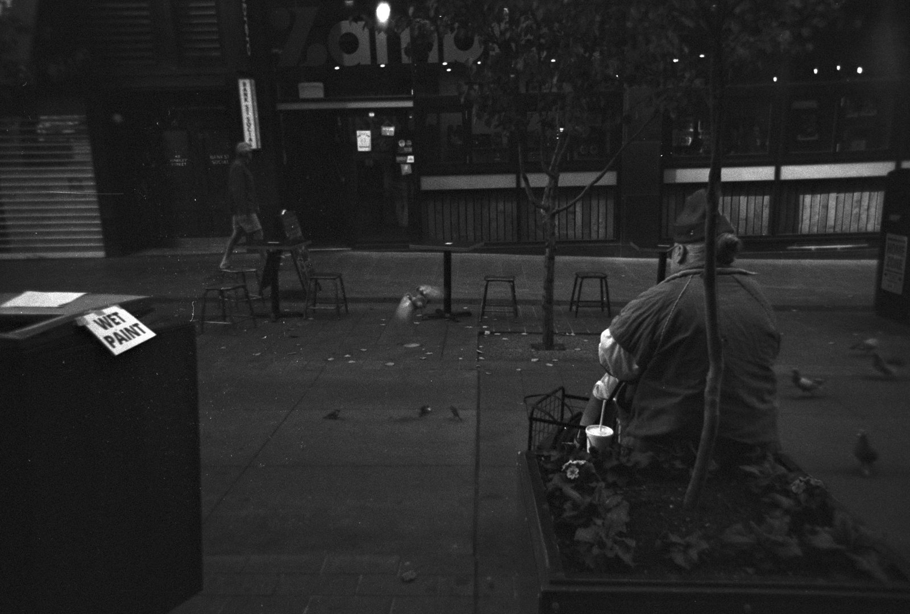
또 실내나 어두운 곳에서는 플래시를 적극적으로 사용해야 합니다. 일회용 카메라의 렌즈는 밝은 렌즈가 아니고 사용할 수 있는 셔터스피드도 제한적이라, 빛이 부족한 곳에서는 사진이 생각보다 굉장히 어둡게 나올 수 있습니다. 제품에 따라 플래시 충전 버튼을 누르거나 스위치를 켠 뒤 잠시 기다려야 하는 경우도 있으니 촬영 전에 확인하는 것이 좋습니다.
요즘에도 일회용 카메라가 나올까?
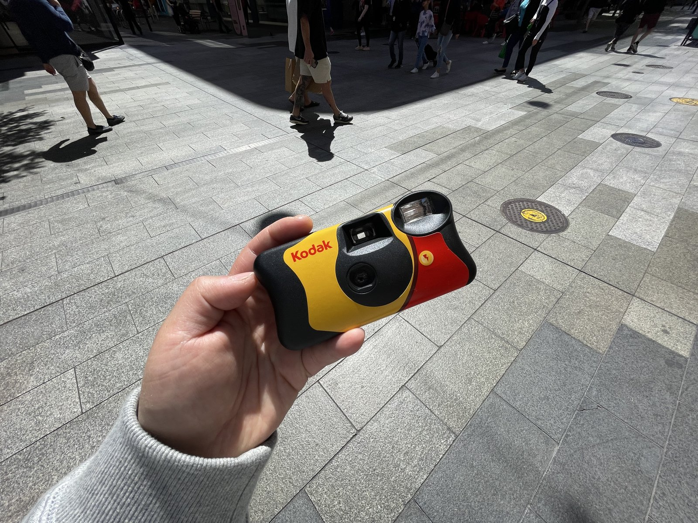
스마트폰으로 수천 장의 사진을 찍을 수 있는 시대지만, 재미있게도 일회용 카메라는 아직도 판매되고 있습니다. 가장 대표적으로 Kodak FunSaver가 있고, Fujifilm QuickSnap 같은 제품도 오랫동안 사랑받아왔습니다. 흑백사진을 찍을 수 있는 Ilford의 일회용 카메라도 있고, 요즘에는 여러 브랜드에서 다양한 필름이나 디자인을 적용한 제품들을 판매하고 있습니다. 개인적으로는 일회용 카메라를 고를 때 너무 많은 스펙을 고민할 필요는 없다고 생각합니다. 애초에 완벽한 사진을 만들기 위해 사용하는 카메라는 아니니까요. 저는 개인적으로 쉽게 구할 수 있는 Kodak FunSaver를 선호합니다.
2026년에 굳이 일회용 카메라를?
사실 효율만 생각하면 일회용 카메라를 사용할 이유는 거의 없습니다. 스마트폰이 훨씬 선명하고, 실패할 확률도 낮고, 찍자마자 확인할 수도 있습니다. 거기에 일회용 카메라는 카메라 가격뿐만 아니라 현상과 스캔 비용까지 들어갑니다.
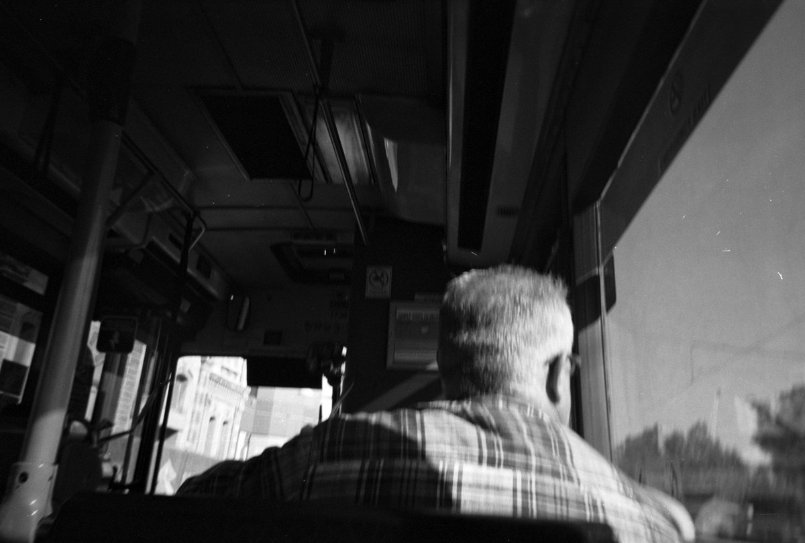
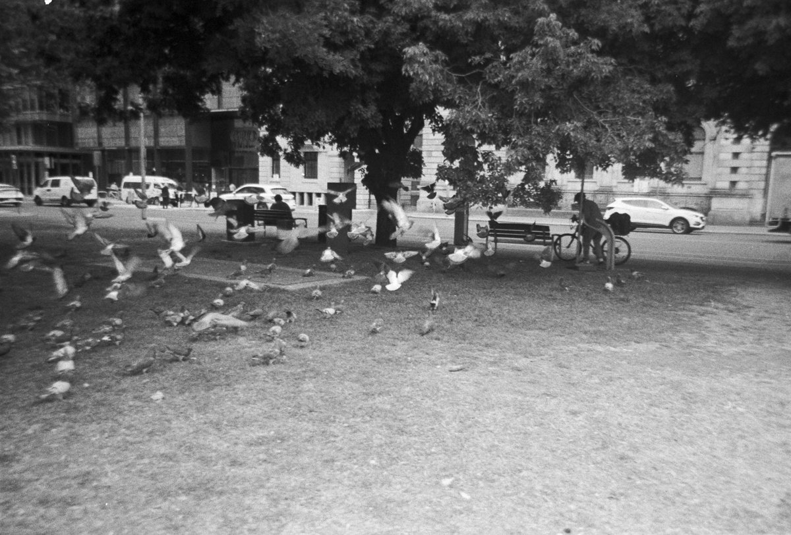
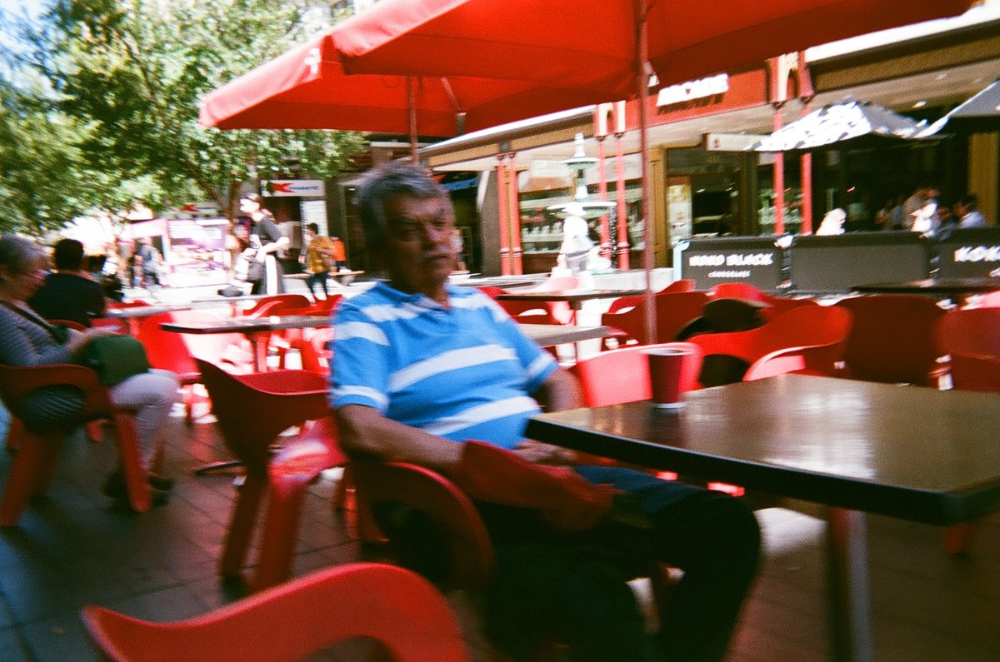
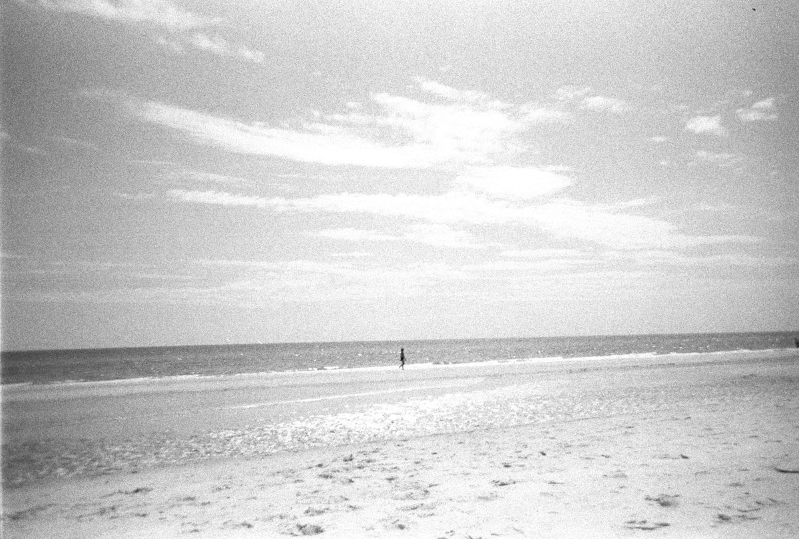
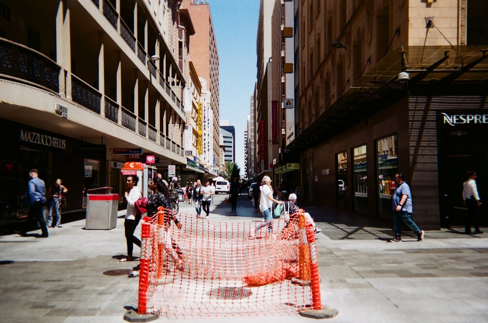
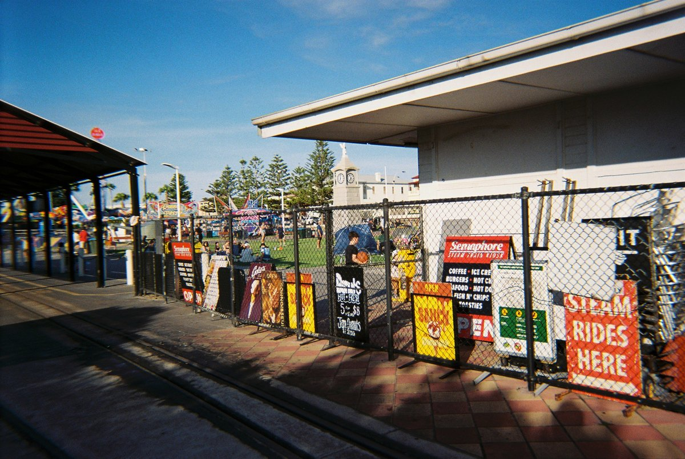
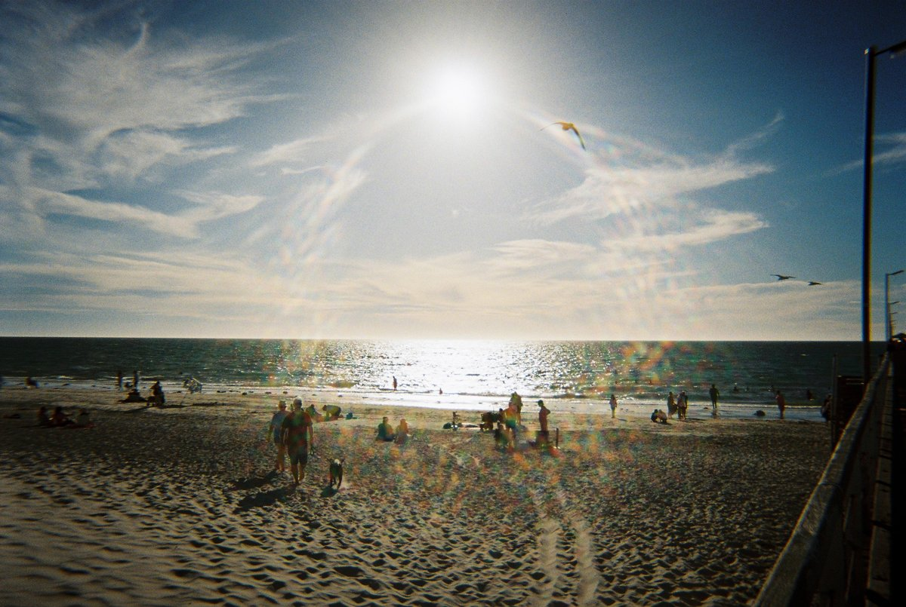
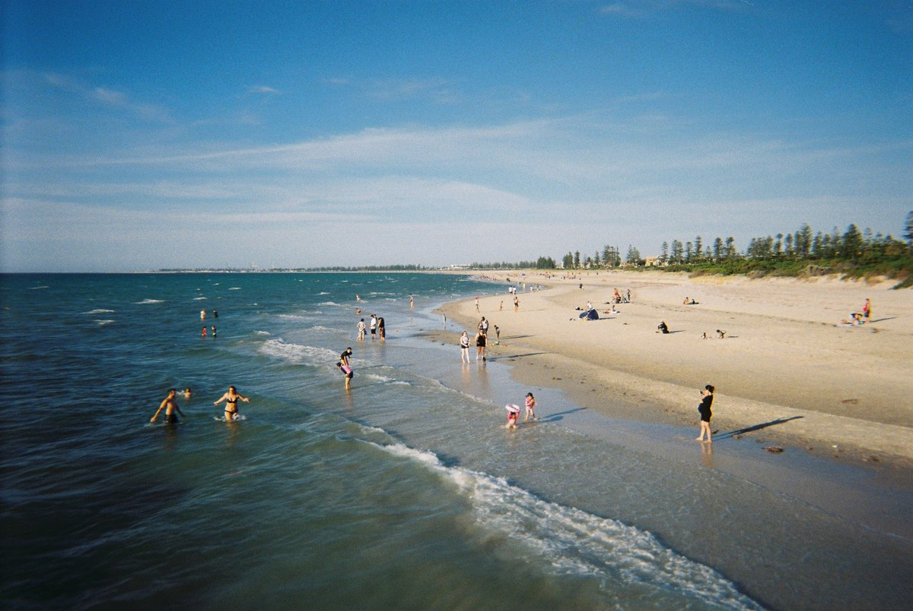
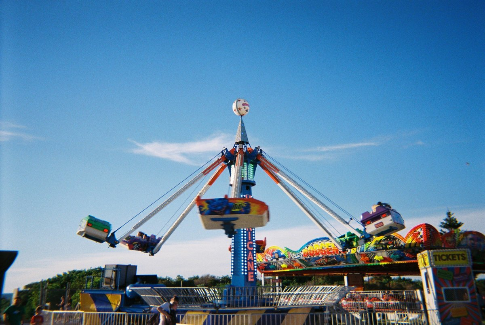
그런데도 사람들이 아직 일회용 카메라를 찾는 이유는 아마 사진을 찍는 경험 자체가 다르기 때문이라고 생각합니다. 27장밖에 없으니 아무 장면이나 마구 찍지 않게 되고, 찍은 사진을 바로 볼 수 없으니 그 순간에 조금 더 집중하게 됩니다. 그리고 며칠 뒤 결과물을 받아보면 완벽하지 않은 사진들 사이에서 이상하게 마음에 드는 한 장을 발견하기도 합니다.
어릴 때 수학여행에서 친구들과 찍었던 사진들도 대부분 완벽하지 않았습니다. 누군가는 눈을 감았고, 누군가는 다른 곳을 보고 있고, 플래시 때문에 얼굴이 하얗게 날아간 사진도 있었습니다. 그런데 20년, 30년이 지나 다시 꺼내보면 오히려 그런 사진들이 가장 재미있습니다.
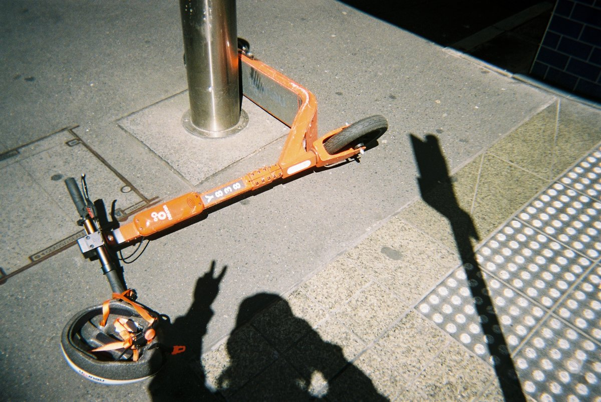
그래서 일회용 카메라는 어쩌면 잘 찍기 위한 카메라가 아니라, 기억을 남기기 위한 카메라인지도 모르겠습니다. 이번에 여행이나 친구들과의 모임을 계획하고 있다면 스마트폰과 함께 일회용 카메라 한 대 정도 챙겨보시는 건 어떨까요? 몇 년 뒤 그 27장의 사진이 생각보다 훨씬 재미있는 추억이 되어 있을지도 모릅니다.